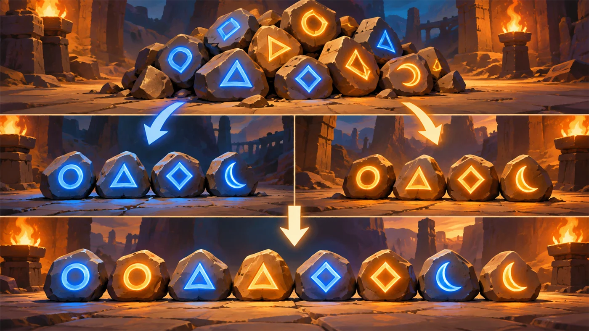
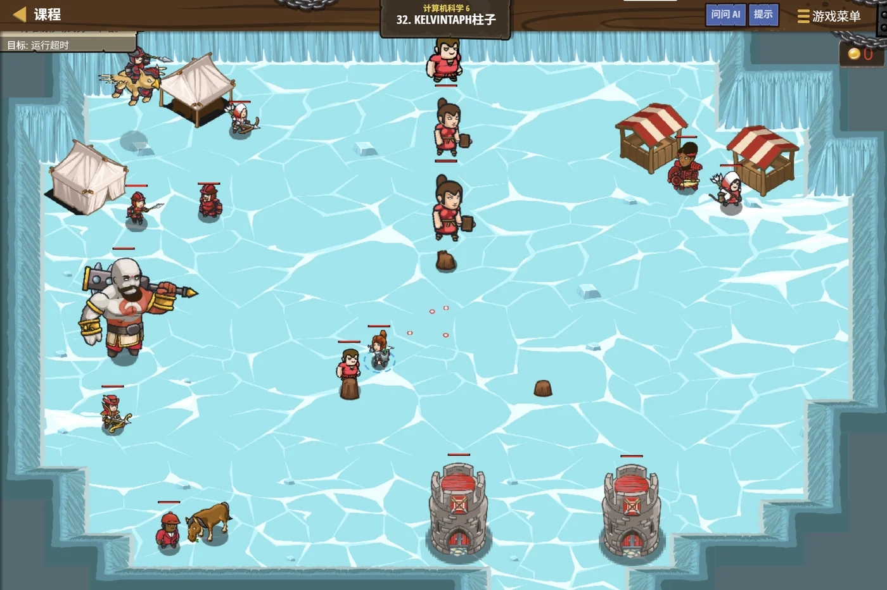

故事：零度以下的高山上，僧侣们用一场古老的活动取暖：
把一摞大小不同的圆盘，从一根柱子整体搬到另一根柱子。
规矩只有两条：一次只能搬一个；大盘永远不许压在小盘上。
贺舒曼把镜子一转：别盯着盘子看，盯着"这一摞怎么化成小一号的一摞"。
扣哒考级 · GESP C++ 五级 · 第 7 单元 | 星砂绿洲 STARDUST OASIS
分沙术 分治算法
Divide & Conquer

塞尼克
沙海向导 · 你的向导
绿洲的工匠跪坐在沙地上，面前是一大堆刚筛好的细沙。
塞尼克看着他的动作：注意看——他不是一点一点挑，而是先把这一堆分成两半。
果然，工匠把沙分成两堆，两堆又各自分成更小的堆， 沙面上渐渐浮现出一片树状的分裂纹路。
分到够小了，再一堆堆处理；他指了指，最后又一层层拼回去——这就是分治。
塞尼克看着他的动作：注意看——他不是一点一点挑，而是先把这一堆分成两半。
果然，工匠把沙分成两堆，两堆又各自分成更小的堆， 沙面上渐渐浮现出一片树状的分裂纹路。
分到够小了，再一堆堆处理；他指了指，最后又一层层拼回去——这就是分治。
塞尼克 · 沙海向导
上一课学递归的时候我说过：把大问题化成同样形状的小问题。这一课就是那个想法最漂亮的用法——不光要拆，还要把结果合并回来。
排序里最快的两种算法（归并、快排），背后都是这一招。
assets/illustrations/py-L5-07-01_sand_sifting.webp
【配图位】俯视构图：一座巨大的沙丘被法师的法杖从中央划开，依次分成四座更小的沙丘，每座小沙丘又被各自处理；沙面上留着一片规整的树状分裂纹路，纹路越往外越细；旁边有几只按粗细排成一列的筛子，最细的一只下面接着发光的细沙；一名披沙色斗篷的向导站着看向这片分纹。
0 单元导语与目标
Unit Overview
0.1 学习目标
1学完这个单元，你将能……
- 说出分治的三步：分、治、合
- 说出分治和递归的关系
- 讲清归并排序的思路
- 讲清快速排序的划分过程
- 用分治理解快速幂
- 说出这三种算法的复杂度
2对标 GESP 考纲（C++ 五级）
- 理解分治算法的思想与三步结构
- 掌握归并排序与快速排序的原理
- 理解合并与划分的关键代码
- 掌握快速幂的分治实现
- 考核目标：能补全合并/划分的关键语句、能判断复杂度
0.2 考纲对照
| 本单元小节 | 对应考纲条目 | 真题常考形式 |
|---|---|---|
| 1 分治的三步 | 分治的思想 | 分、治、合各自做什么 |
| 2 二分查找就是分治 | 分治的应用 | 为什么二分算分治 |
| 3 归并排序 | 归并排序的实现 | 合并时取哪边（稳定性）（必考） |
| 4 快速排序 | 快速排序的划分 | 划分条件怎么写；最坏复杂度 |
| 5 快速幂 | 分治的典型应用 | 体现了什么算法思想 |
1 分治的三步
Three Steps
1.1 分、治、合
分治三步，一步都不能少：
① 分（Divide）——把一个大问题拆成几个规模更小的同类子问题；
② 治（Conquer）——分别解决每个子问题 （如果还太大，就继续拆；小到能直接算，就直接算）；
③ 合（Combine）——把子问题的答案合并成原问题的答案。
一句话：拆开、各自搞定、拼回来。
② 治（Conquer）——分别解决每个子问题 （如果还太大，就继续拆；小到能直接算，就直接算）；
③ 合（Combine）——把子问题的答案合并成原问题的答案。
一句话：拆开、各自搞定、拼回来。
分治的通用骨架——它天生就是递归的形状
C++
返回类型 solve(问题) {
if (问题已经足够小) {
return 直接算出答案; // ① 出口（小到不用再拆）
}
把问题拆成 子问题1, 子问题2, …; // ② 分（Divide）
答案1 = solve(子问题1); // ③ 治（Conquer）
答案2 = solve(子问题2);
return 合并(答案1, 答案2); // ④ 合（Combine）
}注意
分治的代码"长得就是递归"——因为它天然要"自己处理更小的问题"
1.2 分治与递归的关系
分治是"想法"，递归是"写法"。
它们不是一回事，但几乎总是一起出现。
分治是一种解题策略： "我打算把问题拆成小块，分别解决再合并"——这是思路。
递归是一种编程手段： "让函数调用自己"——这是写法。
因为"拆出来的子问题和原问题形状一样"，所以实现分治最自然的方式就是递归。
但反过来不成立： 递归不一定是分治——比如上一课的阶乘， 它只是"从 n 问到 n−1"，只拆出一个子问题，也没有"合并"这一步。
分治是一种解题策略： "我打算把问题拆成小块，分别解决再合并"——这是思路。
递归是一种编程手段： "让函数调用自己"——这是写法。
因为"拆出来的子问题和原问题形状一样"，所以实现分治最自然的方式就是递归。
但反过来不成立： 递归不一定是分治——比如上一课的阶乘， 它只是"从 n 问到 n−1"，只拆出一个子问题，也没有"合并"这一步。
判断"是不是分治"，看有没有"合"这一步。
阶乘递归：
归并排序：拆两半分别排好，再"合并两个有序数组"——这一步才是分治的灵魂。
所以严格说：分治 = 拆成多个子问题 + 有实质的合并步骤。
n × fact(n-1) ——
只拆一份，而且"合并"只是乘一下自己，不算真的合。归并排序：拆两半分别排好，再"合并两个有序数组"——这一步才是分治的灵魂。
所以严格说：分治 = 拆成多个子问题 + 有实质的合并步骤。
2 二分查找就是分治
Binary Search Revisited
2.1 回头看二分
上一课的二分，其实也是分治。
① 分——看一眼中间，把范围砍掉一半；
② 治——只在剩下的那一半里继续找；
③ 合——不需要合并（因为答案只可能在一边）。
所以二分是一种"特殊的、退化的分治"——每次只留一个子问题。
② 治——只在剩下的那一半里继续找；
③ 合——不需要合并（因为答案只可能在一边）。
所以二分是一种"特殊的、退化的分治"——每次只留一个子问题。
2.2 为什么它算分治
分治有两种常见的"拆法"。
拆成多个子问题（归并排序、快速排序、快速幂）——
子问题都要解决，最后得"合"起来。
只留一个子问题（二分查找）—— 因为一眼就能判断"答案在哪半边"，另一边直接扔掉，不用合。
两种都是分治思想：把大范围化成小范围，只是"砍法"不同。
而且它们的复杂度都靠同一个式子算出来： 每层要做的工作 × 层数。
只留一个子问题（二分查找）—— 因为一眼就能判断"答案在哪半边"，另一边直接扔掉，不用合。
两种都是分治思想：把大范围化成小范围，只是"砍法"不同。
而且它们的复杂度都靠同一个式子算出来： 每层要做的工作 × 层数。
复杂度是怎么算出来的（递推式）
TEXT
【归并排序】每次拆成两个"一半大小"的子问题，
合并两个有序数组要扫一遍 O(n)
T(n) = 2 × T(n/2) + O(n) → O(n log n)
【快速排序】平均情况下也拆成两半左右，
划分一遍要扫一遍 O(n)
T(n) = 2 × T(n/2) + O(n) → O(n log n)
【二分查找】只留一个子问题，每层只做 O(1) 的比对
T(n) = T(n/2) + O(1) → O(log n)
记忆方法：层数是 log n，每层的工作量是 O(n) 或 O(1)。关键
"拆成两半"这个动作本身就带来 log n 层——
而每一层都要把 n 个元素过一遍，所以合起来是 n log n
3 归并排序
Merge Sort
3.1 劈成两半，各自排好
归并排序的两步
C++
void mergeSort(int a[], int l, int r) {
if (l >= r) return; // ① 出口：只剩一个元素，天然有序
int mid = l + (r - l) / 2; // ② 分：从中间劈开
mergeSort(a, l, mid); // ③ 治：左半边自己排好
mergeSort(a, mid + 1, r); // 治：右半边自己排好
merge(a, l, mid, r); // ④ 合：把两个有序段并成一个
}先"劈到只剩一个"，再"一层层并回来"
因为一个元素天然就是有序的——这就是它的出口
用 5 个数走一遍
TEXT
原始： 5 9 3 7 2
【分】劈到不能再劈：
[5 9 3 7 2]
[5 9 3] [7 2]
[5 9][3] [7][2]
[5][9] ← 到这里每个只剩 1 个，天然有序
【合】一层层并回来（每次都把两个有序段并成一个有序段）：
[5][9] → [5 9]
[5 9][3] → [3 5 9]
[7][2] → [2 7]
[3 5 9][2 7] → [2 3 5 7 9] ✔ 排好了
一共 log₂5 ≈ 3 层，每层都要把所有元素过一遍。总工作量
层数 log n × 每层 n 次比较 =
比上一级学的冒泡（
O(n log n)——比上一级学的冒泡（
O(n²)）快得多3.2 像拉链一样合并
合并两个有序段：两把"尺子"一起走
C++
// 把 a[l..mid] 和 a[mid+1..r] 两个有序段合并
vector<int> temp;
int i = l, j = mid + 1;
while (i <= mid && j <= r) {
if (__________________) { // ★ 横线处：a[i] <= a[j]
temp.push_back(a[i++]); // 取左边的
} else {
temp.push_back(a[j++]); // 取右边的
}
}
// 把剩下没走完的那一段直接接上
while (i <= mid) temp.push_back(a[i++]);
while (j <= r) temp.push_back(a[j++]);
// 最后把 temp 写回 a[l..r]横线上填
a[i] <= a[j]
带等号——这是"稳定性"的关键
为什么必须写
"稳定"的意思是：值相等的元素，排序后相对顺序不变。
合并时如果遇到两个相等的值：
写
写
记法："想让排序稳定，遇到相等就取左边的。"
a[i] <= a[j]（带等号）？
因为我们要让归并排序稳定。"稳定"的意思是：值相等的元素，排序后相对顺序不变。
合并时如果遇到两个相等的值：
写
<= → 取左边的 →
左边本来就在前面，顺序保住了 ✔（稳定）写
< → 不取左边，转而取右边 →
右边的那一个被放到了前面，顺序颠倒了 ✘（不稳定）记法："想让排序稳定，遇到相等就取左边的。"
图 2（SVG）：归并排序——劈到底，再并回来

assets/illustrations/py-L5-07-02_merge_sort.webp
【配图位】一堆编号沙漠石先被一把发光的刀从中央劈成两半，各自被整成一列（左右两列都按从小到大排好、石上的编号依次增大）；随后左右两列像拉链齿一样交错咬合、合并成一条整齐的长队列；一名披沙色斗篷的向导站在合并处，双手分别指向左右两列的队首。
4 快速排序
Quick Sort
4.1 选一个基准，小的往左
快排的思路：先分开，再各自排
TEXT
核心动作叫"划分"（partition）：
① 从当前区间里挑一个数当"基准"（pivot）
② 把小于等于基准的挪到左边，大于的挪到右边
③ 划分完成后，基准就待在它最终该在的位置上了
——它左边全都 ≤ 它，右边全都 > 它
举例：对 [5 9 3 7 2] 做划分，取最后那个 2 当基准：
比 2 大的都往右，比 2 小的往左：
[2] + [5 9 3 7]
↑
2 已经就位了
再对左边 [ ] 和右边 [5 9 3 7] 分别做同样的事……
一路划分下去，自然就排好了。
注意：快排的分和归并的分不一样 ——
归并是"先劈开、排好、再合"；
快排是"随便分完就各自解决"，而且不需要合并步骤。两个关键差别
① 归并的"分"是对半分，快排的"分"是按基准的大小分；
② 归并需要合并，快排不需要——划完就位了
② 归并需要合并，快排不需要——划完就位了
4.2 划分的代码
以 a[right] 为枢轴，不大于枢轴的移到左侧
C++
int partition(int a[], int left, int right) {
int pivot = a[right]; // ★ 取最后一个元素当基准
int i = left - 1; // i 指向"已确认不大于 pivot"的最后一个位置
for (int j = left; j < right; j++) {
if (__________________) { // ★ 横线处：a[j] <= pivot
i++;
swap(a[i], a[j]); // 把小的换到左边去
}
}
swap(a[i + 1], a[right]); // 把 pivot 放到分界点上
return i + 1; // 返回 pivot 最终所在的位置
}横线上填
a[j] <= pivot
题目要求"把不大于枢轴的元素移到左侧"——所以条件是"≤"，不是"<"
快排最怕"基准选得不好"。
如果每次都能把区间分成差不多大的两半，那层数是 log n，
总复杂度
但如果基准总是挑到最大或最小的那个——划分后会变成"一边 0 个、一边 n−1 个"， 一点没分下去，层数就变成了 n 层。
这时候总复杂度退化到
什么时候会这样？ 最典型的例子就是：数组本来已经升序排好，而你的基准每次都取第一个元素。
因为第一个元素正好是最小的，划分后右边剩下 n−1 个，一层只减少一个元素。
O(n log n)。但如果基准总是挑到最大或最小的那个——划分后会变成"一边 0 个、一边 n−1 个"， 一点没分下去，层数就变成了 n 层。
这时候总复杂度退化到
O(n²)——和最慢的冒泡一样慢。什么时候会这样？ 最典型的例子就是：数组本来已经升序排好，而你的基准每次都取第一个元素。
因为第一个元素正好是最小的，划分后右边剩下 n−1 个，一层只减少一个元素。
图 4（SVG）：快速排序的划分
assets/illustrations/py-L5-07-03_quick_partition.webp
【配图位】沙地上一排刻着数字的石块，正中一块被单独高高立起、周身发光（表示基准）；它左边的石块编号都比较小、整体发着冷色光，右边的石块编号都比较大、发着暖色光；一名披沙色斗篷的向导弯腰用一根短杖把石块左右拨动，沙面上留着一道从中间分开的分界线。
5 快速幂
Fast Power
5.1 把指数砍一半
算 a^n，怎么才能快
TEXT
【笨办法】一个一个乘
a × a × a × … × a 一共乘 n − 1 次
n = 10^9 时——根本算不完
【聪明办法】把指数砍一半
观察：a^8 = (a^4)^2 = ((a^2)^2)^2
算 a^8 只需要：
a^2 = a × a 乘 1 次
a^4 = a^2 × a^2 乘 1 次
a^8 = a^4 × a^4 乘 1 次
→ 一共 3 次！而笨办法要 7 次。
指数是偶数：a^n = (a^(n/2))²
指数是奇数：a^n = a × a^(n−1)
每处理一次，指数就减半 —— 又见"砍一半"。
n = 10^9 时，大约只要 30 次乘法。复杂度
O(log n)——因为指数每次减半，层数是 log n5.2 代码与效率
快速幂（顺便取模，防止溢出）
C++
// 求 a^n % mod
long long fastPow(long long a, long long n, long long mod) {
long long ans = 1;
a %= mod;
while (n > 0) {
if (n % 2 == 1) { // 指数是奇数 → 多乘一个 a
ans = ans * a % mod;
}
a = a * a % mod; // 底数平方
n /= 2; // ★ 指数减半
}
return ans;
}两个关键点
①
② 每一步都取模——不然数会大到溢出
n /= 2 每次把指数砍一半——这是分治；② 每一步都取模——不然数会大到溢出
快速幂体现的是什么算法思想？
分治。
因为它把"算 a^8"这件事拆成了"算 a^4、再平方"—— 子问题是"同样形状、规模减半"的问题，最后再合并（平方）。
这正是分治的标准形状：拆成规模更小的同类问题 → 分别解决 → 合并。
虽然代码是写成循环的（没有用递归），但思维是分治的—— 这也说明"分治是想法、递归只是写法"。
因为它把"算 a^8"这件事拆成了"算 a^4、再平方"—— 子问题是"同样形状、规模减半"的问题，最后再合并（平方）。
这正是分治的标准形状：拆成规模更小的同类问题 → 分别解决 → 合并。
虽然代码是写成循环的（没有用递归），但思维是分治的—— 这也说明"分治是想法、递归只是写法"。
注意：循环写的快速幂，也是分治。
这段代码没有用到递归，但"把指数减半"这个动作本身就是分治的核心。
所以判断"是不是分治"，看的是"有没有把问题拆成更小的同类问题"， 而不是"有没有用递归"。
这一点在考试里常被考到："快速幂体现的编程思想是什么？"——答：分治。
所以判断"是不是分治"，看的是"有没有把问题拆成更小的同类问题"， 而不是"有没有用递归"。
这一点在考试里常被考到："快速幂体现的编程思想是什么？"——答：分治。
6 代码实战
Level Practice
关卡
Kelvintaph 柱子
进入关卡 →思路：想把 n 个盘子搬过去，只要想清楚三件事：
① 先把上面 n−1 个搬到中转柱（一个同样形状的小问题）；
② 再把最大的那个直接搬过去（一步就能做完）；
③ 最后把那 n−1 个从中转柱搬回目标柱。
把大问题切成两个小一号的同样问题——这就是分治。

assets/stages/py-L5-07-stage1_kelvintaph_pillars.webp
【关卡截图位】请把《Kelvintaph 柱子》的游戏画面截图放到此处（放入 assets/stages/ 目录，文件名为 py-L5-07-stage1_kelvintaph_pillars.webp）。
重点示例：同一个动作，套小一号的自己
C++
void moveTower(int n, int fromPeg, int toPeg, int viaPeg) {
if (n == 0) return; // 出口：没有盘子可搬
moveTower(n - 1, fromPeg, viaPeg, toPeg); // ① 上面 n-1 个 → 中转柱
hero.dropItem(toPeg); // ② 最大的那个 → 目标柱
moveTower(n - 1, viaPeg, toPeg, fromPeg); // ③ n-1 个 → 目标柱
}要点 出口
n == 0 不能少；函数里调用了一个"小一号的自己"，这就是分治的骨架
和本单元的关系：
分治的三步是固定套路：拆成同样形状的小问题 → 分别解决 → 把结果合起来。
归并排序拆成"左右两半"，快排拆成"左右两段"，汉诺塔拆成"上下两摞"——形状不同，骨架一模一样。
去扣哒世界闯这一关 →
归并排序拆成"左右两半"，快排拆成"左右两段"，汉诺塔拆成"上下两摞"——形状不同，骨架一模一样。
Common Pitfalls
7 常见陷阱

扣哒鸭 · 调试官
分治的坑有两个特点：要么忘了递归出口，要么把"合"这一步写错。四条。
1
分治的递归忘了写出口。

扣哒鸭：归并排序的第一行必须是
少了它，区间永远拆不完，递归会一直往下一路走到栈溢出。
if (l >= r) return; ——
它保证"拆到只剩一个元素就停"。少了它，区间永远拆不完，递归会一直往下一路走到栈溢出。
正确做法：分治代码第一行先写出口
2
归并合并时忘了写"处理剩下的那一段"。

扣哒鸭：
可另一边还有剩下的元素没搬过去呢！ 必须补两个
while (i <= mid && j <= r) 会在某一边先走完时停下。可另一边还有剩下的元素没搬过去呢！ 必须补两个
while 把它们接上——漏了就会丢数据。正确做法：循环后补两个
while3
写
< 而不是 <=，把稳定排序变成了不稳定。
扣哒鸭：合并时遇到相等的两个值，
写
写成
<= 才会取左边那个——
这样相等的元素保持了原来的先后顺序，才是稳定的。写成
< 就会取右边的，顺序被颠倒，稳定性就没了。记牢：想稳定，相等时取左边 →
a[i] <= a[j]4
以为快排"最坏情况也是 O(n log n)"。

扣哒鸭：
如果基准每次都挑到最大或最小——比如数组已经升序、而基准取第一个元素—— 划分后只剩一边、还只少了一个数，层数变成 n 层，复杂度就退化到 O(n²) 了。
O(n log n) 说的是平均情况。如果基准每次都挑到最大或最小——比如数组已经升序、而基准取第一个元素—— 划分后只剩一边、还只少了一个数，层数变成 n 层，复杂度就退化到 O(n²) 了。
记牢：快排平均
O(n log n)，最坏 O(n²)8 题目练习
Practice
前 5 题改编自 C++ 五级真题，其余为原创练习题。
改编自 2026 年 9 月 · C++ 五级 · 第 11 题单选题
下面是归并排序中合并两个有序区间（升序排序）的部分代码。
若希望排序保持稳定，横线处应填写（ ）。
while (i <= mid && j <= right) {
if (__________________) {
temp.push_back(a[i++]);
} else {
temp.push_back(a[j++]);
}
}
A.
C.
a[i] < a[j] B.a[i] > a[j]C.
a[i] >= a[j] D.a[i] <= a[j]
查看答案与详解
答案：D。"稳定"的含义是：值相等的元素，排序后相对顺序不变。
在合并这一步，"保持顺序"就等价于： 遇到两边相等的时候，取左边那一个。
因为左半边的元素原本就排在前面—— 先取它，顺序就保住了。
所以要写
A 项（
B、C 项把方向搞反了：先取大的元素， 那根本就不是升序了。
一句话记牢：想让排序稳定，遇到相等就取左边。
对应小节3.2 像拉链一样合并。
在合并这一步，"保持顺序"就等价于： 遇到两边相等的时候，取左边那一个。
因为左半边的元素原本就排在前面—— 先取它，顺序就保住了。
所以要写
a[i] <= a[j]（带等号） ✔A 项（
<）为什么不选？
当 a[i] == a[j] 时它不成立，
于是会走 else 分支、去取右边的 a[j]——
右边的元素被放到了前面，顺序就反了，排序不稳定。B、C 项把方向搞反了：先取大的元素， 那根本就不是升序了。
一句话记牢：想让排序稳定，遇到相等就取左边。
对应小节3.2 像拉链一样合并。
改编自 2026 年 9 月 · C++ 五级 · 第 12 题单选题
下面快速排序的划分函数以
a[right] 为枢轴，
并把不大于枢轴的元素移动到左侧。横线处应填写（ ）。int partition(int a[], int left, int right) {
int pivot = a[right];
int i = left - 1;
for (int j = left; j < right; j++) {
if (__________________) {
i++;
swap(a[i], a[j]);
}
}
swap(a[i + 1], a[right]);
return i + 1;
}
A.
C.
a[j] <= pivot B.a[j] > pivotC.
a[i] <= pivot D.a[right] < a[j]
查看答案与详解
答案：A。答案就藏在题干里——"把不大于枢轴的元素移动到左侧"。
"不大于"翻译成代码就是
这段代码在做什么？
每遇到一个
循环结束后，
B 项方向反了（那会把大的搬到左边）； C 项用的是
对应小节4.2 划分的代码。
"不大于"翻译成代码就是
<=。
所以判断条件必须写 a[j] <= pivot ✔这段代码在做什么？
i 始终指向"已确认不大于 pivot"的最后一个位置；每遇到一个
a[j] <= pivot，就把 i 往前挪一格，
再把它换到左区去。循环结束后，
a[left..i] 全都不大于 pivot；
最后 swap(a[i+1], a[right]) 把枢轴放到分界点上——
此时它左边全 ≤ 它、右边全 > 它，位置彻底固定。B 项方向反了（那会把大的搬到左边）； C 项用的是
a[i]，
可 i 指向的是"已经处理好的最后一个位置"，
拿它来当判断依据毫无意义；
D 项是在拿枢轴和目标元素比大小，和"要不要交换"没关系。对应小节4.2 划分的代码。
改编自 2026 年 9 月 · C++ 五级 · 判断题 第 7 题判断题
快速排序中如果选取区间第一个元素作为枢轴。
当输入数组已经升序排列时，其最坏时间复杂度仍为
O(n log n)。（ ）查看答案与详解
答案：错误（×）。这恰恰是快排最坏输入的一个经典例子，
此时会退化到
为什么？假设数组是
第一个枢轴是 1——它是整个区间里最小的那个。
划分之后，左边一个元素都没有，右边剩下 n−1 个—— 等于只把问题缩小了 1！
下一层同样：枢轴又是剩下的最小值，右边剩 n−2 个……
于是层数变成了 n 层，每层还要扫一遍 O(n) —— 总复杂度 O(n²)。
这正是快排最怕的情形：划分极不均匀。 理想的划分是每次都能分成差不多一半，那样才有 log n 层、达到 O(n log n)。
怎么避免？常见做法是随机选择枢轴，或者取首、中、尾三个数的中位数当枢轴， 这样遇到"已排好序"的输入也不会退化。
顺便对比归并排序： 它是对半劈的，无论输入长什么样，层数永远是 log n——所以最坏也是 O(n log n)。
对应小节4.1 选一个基准，小的往左。
O(n²)。为什么？假设数组是
1, 2, 3, …, n，而枢轴取第一个元素：第一个枢轴是 1——它是整个区间里最小的那个。
划分之后，左边一个元素都没有，右边剩下 n−1 个—— 等于只把问题缩小了 1！
下一层同样：枢轴又是剩下的最小值，右边剩 n−2 个……
于是层数变成了 n 层，每层还要扫一遍 O(n) —— 总复杂度 O(n²)。
这正是快排最怕的情形：划分极不均匀。 理想的划分是每次都能分成差不多一半，那样才有 log n 层、达到 O(n log n)。
怎么避免？常见做法是随机选择枢轴，或者取首、中、尾三个数的中位数当枢轴， 这样遇到"已排好序"的输入也不会退化。
顺便对比归并排序： 它是对半劈的，无论输入长什么样，层数永远是 log n——所以最坏也是 O(n log n)。
对应小节4.1 选一个基准，小的往左。
改编自 2026 年 9 月 · C++ 五级 · 判断题 第 8 题判断题
归并排序的递推式为
T(n) = 2T(n/2) + O(n)，
对应的时间复杂度为 O(n log n)。（ ）查看答案与详解
答案：正确（√）。这个递推式把归并排序的每一步都说清楚了：
怎么解出 O(n log n)？把它"展开"看：
第 1 层：1 个问题，合并工作量 n；
第 2 层：2 个问题，每个 n/2，合并工作量合计还是 n；
第 3 层：4 个问题，每个 n/4，合计还是 n；
……一直到每个问题只剩 1 个元素。
因为每拆一次规模减半，一共能拆 log n 层； 而每层的合并工作量都是 n。
所以总复杂度 = 层数 × 每层工作量 =
这个"每层都是 O(n)、一共 log n 层"的算法， 是理解和记忆归并/快排复杂度的通用办法——比背公式可靠得多。
对应小节2.2 为什么它算分治。
2T(n/2) —— 把问题拆成两个"一半大小"的子问题，分别递归处理；+ O(n) —— 合并两个有序段要扫一遍，代价是 O(n)。怎么解出 O(n log n)？把它"展开"看：
第 1 层：1 个问题，合并工作量 n；
第 2 层：2 个问题，每个 n/2，合并工作量合计还是 n；
第 3 层：4 个问题，每个 n/4，合计还是 n；
……一直到每个问题只剩 1 个元素。
因为每拆一次规模减半，一共能拆 log n 层； 而每层的合并工作量都是 n。
所以总复杂度 = 层数 × 每层工作量 =
log n × n = O(n log n) ✔这个"每层都是 O(n)、一共 log n 层"的算法， 是理解和记忆归并/快排复杂度的通用办法——比背公式可靠得多。
对应小节2.2 为什么它算分治。
改编自 2026 年 6 月 · C++ 五级 · 第 7 题单选题
下面代码实现了计算
a^n 的快速幂算法，
该算法体现的编程思想是（ ）。long long fastPow(long long a, long long n) {
long long ans = 1;
while (n > 0) {
if (n % 2 == 1) ans *= a;
a *= a;
n /= 2;
}
return ans;
}
A.贪心 B.动态规划 C.分治 D.枚举
查看答案与详解
答案：C。快速幂体现的是分治思想。
核心动作是
以 a⁸ 为例：
笨办法要连乘 7 次；
快速幂只做三次平方：
这就是把"算 a⁸"拆成了"先算 a⁴、再平方"—— 子问题是同样形状、规模减半的问题，算完再合并（平方）。 完全符合分治"分、治、合"的形状。
复杂度从 O(n) 降到 O(log n)—— n = 10⁹ 时，从十亿次乘法变成大约 30 次。
顺便辨析其他三个选项：
A 贪心——每一步选当前最优且不回头，快速幂没有"选择"这个动作；
B 动态规划——需要"状态 + 转移方程"，而且通常要处理重叠子问题，快速幂没有；
D 枚举——把所有可能逐个试，那正是"笨办法"要做的事。
还有一点值得注意：这段代码是用循环写的，但思想是分治的—— "分治是想法、递归只是写法"再一次得到印证。
对应小节5.2 代码与效率。
核心动作是
n /= 2——把指数"砍掉一半"。以 a⁸ 为例：
笨办法要连乘 7 次；
快速幂只做三次平方：
a² → a⁴ → a⁸。这就是把"算 a⁸"拆成了"先算 a⁴、再平方"—— 子问题是同样形状、规模减半的问题，算完再合并（平方）。 完全符合分治"分、治、合"的形状。
复杂度从 O(n) 降到 O(log n)—— n = 10⁹ 时，从十亿次乘法变成大约 30 次。
顺便辨析其他三个选项：
A 贪心——每一步选当前最优且不回头，快速幂没有"选择"这个动作；
B 动态规划——需要"状态 + 转移方程"，而且通常要处理重叠子问题，快速幂没有；
D 枚举——把所有可能逐个试，那正是"笨办法"要做的事。
还有一点值得注意：这段代码是用循环写的，但思想是分治的—— "分治是想法、递归只是写法"再一次得到印证。
对应小节5.2 代码与效率。
原创练习题判断题
归并排序在任何输入下的时间复杂度都是
O(n log n)。（ ）查看答案与详解
答案：正确（√）。这是归并排序相对快速排序的最大优势。
为什么它能这么稳？因为归并排序的"分"是永远对半劈—— 从中间切开，跟数据本身长什么样完全无关。
所以层数永远是 log n 层，每层的合并工作量永远是 n。 不管输入是随机的、已经排好的、还是完全倒序的，结果都是
对比快速排序： 它的"分"是按基准的大小分的，划分是否均匀取决于运气和数据的分布—— 平均是
所以两者的取舍是：
归并——复杂度稳定、且排序稳定；代价是需要额外的 O(n) 临时空间。
快排——原地排序、常数小、实际跑得常常更快；代价是最坏会退化，且不稳定。
这类"哪种更好"的问题没有标准答案，关键是说清各自的取舍。
对应小节3.1 劈成两半，各自排好。
为什么它能这么稳？因为归并排序的"分"是永远对半劈—— 从中间切开，跟数据本身长什么样完全无关。
所以层数永远是 log n 层，每层的合并工作量永远是 n。 不管输入是随机的、已经排好的、还是完全倒序的，结果都是
O(n log n)。对比快速排序： 它的"分"是按基准的大小分的，划分是否均匀取决于运气和数据的分布—— 平均是
O(n log n)，最坏退化成 O(n²)。所以两者的取舍是：
归并——复杂度稳定、且排序稳定；代价是需要额外的 O(n) 临时空间。
快排——原地排序、常数小、实际跑得常常更快；代价是最坏会退化，且不稳定。
这类"哪种更好"的问题没有标准答案，关键是说清各自的取舍。
对应小节3.1 劈成两半，各自排好。
原创练习题编程题
题目要求：读入
样例：输入
n 个整数，
用归并排序把它们从小到大排好并输出。样例：输入
5 / 5 9 3 7 2，
输出 2 3 5 7 9。查看参考答案与要点
#include <iostream>
using namespace std;
int a[100005], tmp[100005];
void mergeArr(int l, int mid, int r) {
int i = l, j = mid + 1, k = l;
while (i <= mid && j <= r) {
if (a[i] <= a[j]) tmp[k++] = a[i++]; // 相等取左边 → 稳定
else tmp[k++] = a[j++];
}
while (i <= mid) tmp[k++] = a[i++]; // ★ 收尾：左边剩的
while (j <= r) tmp[k++] = a[j++]; // ★ 收尾：右边剩的
for (int t = l; t <= r; t++) a[t] = tmp[t]; // 写回
}
void mergeSort(int l, int r) {
if (l >= r) return; // ★ 出口
int mid = l + (r - l) / 2;
mergeSort(l, mid);
mergeSort(mid + 1, r);
mergeArr(l, mid, r);
}
int main() {
int n;
cin >> n;
for (int i = 0; i < n; i++) cin >> a[i];
mergeSort(0, n - 1);
for (int i = 0; i < n; i++) cout << a[i] << " ";
cout << endl;
return 0;
}
输入 5 / 5 9 3 7 2 输出：2 3 5 7 9
要点：
① 归并排序的三步在这段代码里一步不少：
分（mid 从中间切）、治（两次递归）、合（mergeArr）；
② 出口 if (l >= r) return; 必须写在最前面——
它保证"拆到只剩一个元素就停"；
③ 合并里的两个收尾 while 千万不能漏：
主循环会在某一边走完时停下，另一边还剩的元素必须补上去，否则会丢数据。；
④ 条件写 a[i] <= a[j]（带等号），
这样排序才是稳定的；
⑤ 需要一个临时数组 tmp 存放合并结果，
合并完再整体写回 a[l..r]。；
⑥ 复杂度 O(n log n)，
而且不管输入什么样都是这个量级——这正是它比快排稳的地方。
对应小节3.1 劈成两半，各自排好；6 代码实战。
9 本单元小结
Unit Summary
塞尼克 · 沙海向导
四句话记住分治：一、三步缺一不可：分（拆开）、治（各自解决）、合（拼回来）。
二、分治是想法，递归是写法——但判断"是不是分治"要看有没有"合"这一步。
三、归并排序：对半劈，合并时"相等取左边"才稳定；任何输入都是 O(n log n)。
四、快速排序：按基准分，划分完基准就位、不用合并；最坏会退化到 O(n²)。
沙分完了。最后一站是最省水的路线——那里要在每个岔路口，都选眼前最划算的那条。
你在分沙堆旁收获了什么
- 分治三步——分、治、合，一步都不能少。
- 分治的代码形状——先写出口，再拆、再递归、最后合并。
- 分治 vs 递归——分治是想法，递归是写法； 有"合"这一步才算分治。
- 二分查找也是分治——只是"只留一个子问题"，所以不需要合。
- 复杂度的算法——层数 × 每层工作量；
拆两半 → log n 层，每层 O(n) →
O(n log n)。 - 归并排序——对半劈到只剩一个，再一层层合并。
- 合并的两个要点——相等时取左边（稳定）；
主循环后要补两个
while收尾。 - 归并的复杂度——
O(n log n)， 任何输入都一样稳，代价是需要 O(n) 临时空间。 - 快速排序——选枢轴 → 划分（小的往左）→ 枢轴一步到位 → 递归两边。
- 划分的条件——题目说"把不大于枢轴的移到左边"，就写
a[j] <= pivot。 - 快排的复杂度——平均
O(n log n)， 最坏O(n²)（比如已升序而枢轴取第一个元素）。 - 归并 vs 快排——归并稳定、复杂度稳，但要额外空间； 快排原地、常数小，但最坏会退化且不稳定。
- 快速幂——
n /= 2把指数减半， 复杂度从 O(n) 降到 O(log n)；体现的是分治思想。
下一站：最省水的路线
运水队停在几处绿洲的岔路口。队首的向导举起水囊，
比量着通往各处的路——然后选了最近的那一处水源。
下一单元我们学贪心算法与复杂度估算：
怎么"每一步都选眼前最划算的"，什么时候这个办法真的能通向最优解，
以及怎么一眼看出一段代码要跑多久。